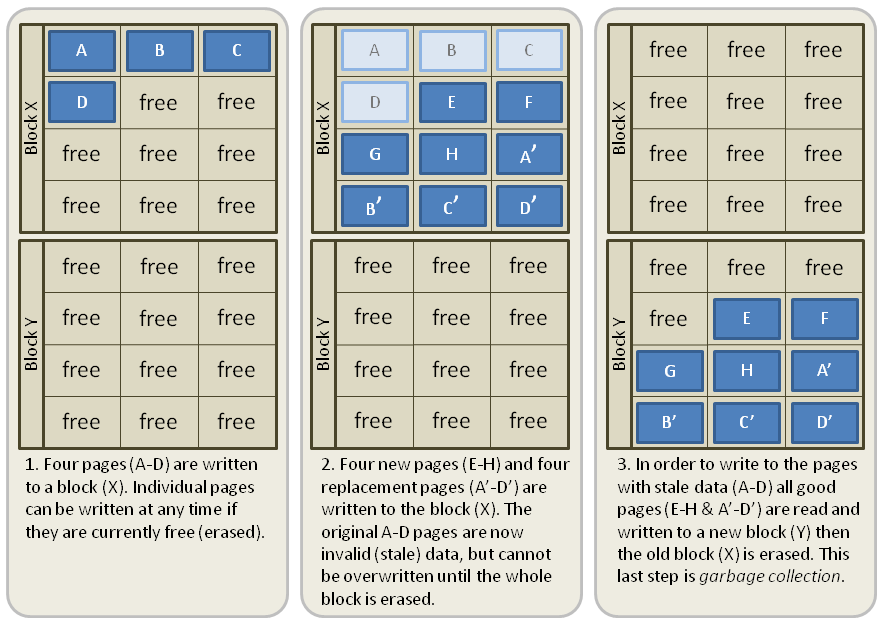

Page ② left the SSD with a log-structured FTL that writes every new version to a fresh page. A nearly full drive must keep taking writes on top of that, so the log needs a steady supply of free pages. That choice also needs one map entry per page and lets cold blocks escape wear. This page prices each cost and shows how it is kept down. The central result is one formula: if the block being reclaimed is still a fraction u live, every page the user writes costs 1/(1−u) pages of flash writing.
Section tags: ★ core = read every line · main = read · skim = the figure and the CARRY line at the end of the section are enough. Paper tags: papers: needed = the OpenStd papers use it without explaining it · papers: skip = safe to pass on the way to the papers. Nothing is cut; the amber line under each heading says which part the papers use.
What this page is about. The goal on top; the log's three costs below it, with cost 1 as the chain the keystone sits in. Every round chip opens its section.
MUST READThe figure is the page's spine: the log needs a steady supply of free pages, garbage collection supplies them, and §2–§4 price that supply and lower the price. Read §2 and §3 (★ core) in full, and §1, §4–§6, §9 and §10 as main; §7 and §8 are skim, figure and CARRY. Figure 2's purple box is the price of one supply cycle, and its panel ③ is the first lever. On the way to the papers: §1–§5 are needed, §6–§9 can be skipped, and §10 shows the one idea the papers take from this page: the writer above sets u, so it sets DLWA. Their own background, why DRAM is the cost a flash cache fights and how Flashield, Kangaroo, FairyWREN and Nemo each fix what the design before them left, is page 3.5, read next; page ④ §12 holds the mechanisms they take from LFS.
FOR THE PAPERS · NEEDEDAll of it, briefly: the papers say "cleaning" or "garbage collection" without explaining it. Kangaroo §2.2 and FairyWREN §3.1 start from this section's fact, that a dead page is freed only together with its whole block, which in today's drives is an erase unit of many blocks, up to gigabytes. A cache may instead drop a whole unit with nothing copied: page ④ §12.4.

Figure 1. Garbage building up, and garbage collection, as Wikipedia draws it. Panel 1: pages A–D are written to free pages of block X. Panel 2: new pages E–H and new versions A′–D′ arrive; A–D become stale but cannot be overwritten. Panel 3: the good pages are copied to block Y, and block X is erased. Image: Music Sorter, Wikimedia Commons (from the English Wikipedia article "Write amplification"), CC BY-SA 3.0.
Garbage is the old version of a logical block after that block has been rewritten. Figure 1 shows it building up. In panel 1, four pages A–D are written into free pages of block X. In panel 2, four new pages E–H arrive and A–D are rewritten as A′–D′. The log-structured FTL puts all eight into free pages, so A–D stay where they were, still VALID to the chip but no longer pointed to by the map. Those four are garbage, also called dead pages. OSTEP 44.7–44.8
Garbage cannot be reused page by page. A dead page is a programmed page, and page ② §3 showed that a programmed page becomes writable again only when its whole block is erased. In Figure 1 the four dead pages of block X can be freed only together with its eight live ones, so the live ones must first be copied to another block, Y. That copy-then-erase, panel 3, is garbage collection. OSTEP 44.8
Without collection the drive would run out of free pages even if the user's data never grew, because every rewrite takes a fresh page and leaves a dead one behind.
CARRYEvery rewrite leaves its old version behind as a dead page. A dead page comes back only when its whole block is erased, so the live pages sharing that block must be copied out first.
FOR THE PAPERS · NEEDEDNeeded: the four steps and how liveness is decided. Kangaroo §2.2 puts it in one line: "Most dlwa is caused by cleaning activity that copies live pages elsewhere before an erase block is cleared." FairyWREN and Nemo run this same loop inside the cache itself (page 3.5 §8); page ④ §12.4 shows the cache's version, which may drop live objects instead of copying them, and §12.5 the liveness rule a third time. Skip: When GC runs and Figure 2, ③.
Figure 2. One garbage collection on OSTEP's example (44.8, redrawn), continuing Figure 14 of page ②. The victim, block 0, has two dead pages and two live ones. ① The live b1 and b2 are copied to pages 6 and 7, and the map is updated. ② Block 0 is erased. The violet box counts what the reclaim cost. ③ When GC runs, in three steps: step 1, above the threshold, no GC; step 2, the head of the log fills, a free block becomes the new head, and the free blocks drop to the threshold, which is the trigger; step 3, only then GC chooses the full block with the fewest live pages, moves its live page and erases it.
Garbage collection (GC) runs in four steps: choose a block that holds dead pages, called the victim; read its live pages; write them to the head of the log as if they were new writes; erase the victim, so that all its pages are free again. OSTEP 44.8
When GC runs. One block filling up does not start GC. The log always writes into the block at its head, and when that block is full the FTL opens a free, erased block. GC keeps free blocks in stock, and the trigger is their count. In Figure 2, ③, the head of the log fills, the FTL opens a free block as the new head, and the free blocks drop to the threshold (step 2); that drop starts GC. Only then is a victim chosen (step 3). The victim is chosen among full blocks only, since the block at the head of the log is still being filled, and it is usually the one with the fewest live pages, the greedy rule of §4. With free blocks to spare, GC can run early, while the drive is idle. With none left, a client's write has to wait for it, which is the "now" cost of page ②, Figure 11. Wikipedia's Figure 1 has only two blocks, so there X is the only candidate. OSTEP 44.8 (cleaning pushed to idle time); the free-block threshold: beyond OSTEP
In Figure 2, which continues page ②'s example, the victim is block 0. Its pages hold a1, a2, b1 and b2. a1 and a2 are dead, since logical blocks 100 and 101 were rewritten into pages 4 and 5; b1 and b2 are live. ① The FTL reads b1 and b2 and programs them into the next free pages, 6 and 7, and updates the map to 2000 → 6 and 2001 → 7. ② It erases block 0, and four free pages are back. OSTEP 44.8
How does the FTL know which pages are live? Each page carries, in its OOB area (page ② §7), the number of the logical block it was written for. Page p holding logical block L is live exactly when the map still says L → p. Page 2 holds 2000 and the map says 2000 → 2, so it is live. Page 0 holds 100, but the map says 100 → 4, so it is dead. One map lookup per page decides it. OSTEP 44.8
The best victim is a block with no live pages at all: it can be erased at once, with nothing to copy. The worst is a block that is almost entirely live, because the collector pays to copy nearly a whole block and wins back almost nothing. §3 turns this observation into a number. OSTEP 44.8
CARRYGC = pick a victim, copy its live pages to the log, erase it. It runs when free blocks fall to a threshold, not when one block fills, and the victim is a full block, usually the one with the fewest live pages. A page is live exactly when the map still points at it; the page's OOB note says which logical block it holds. The copies are the cost.
FOR THE PAPERS · NEEDEDNeeded: the result, WA = 1/(1−u), and links 1–4a of Figure 3. The papers call this number DLWA, device-level write amplification, and Kangaroo's Figure 2 measures the curve on a 1.9 TB drive: about 1× at 50% utilization, about 10× at 100%. Link 4a is their write budget, quoted as device-writes per day (§10.3). In a cache, u is partly a choice: page ④ §12.4, Figure 14. Skip for the papers: the proof steps (keep the result) and link 4b.
Suppose the SSD runs in steady state: free pages come only from garbage collection, the free pool is the same size after each reclaim as before it, and every victim block of N pages holds a fraction u of live pages (0 ≤ u < 1). Then the write amplification is WA = 1/(1−u), whatever the block size N.
The copies in Figure 2 are flash writes the client never asked for, so they raise write amplification (page ② §5). The box at the bottom of Figure 2 counts them for one reclaim: 2 copies, after which 2 free pages serve the client, so 4 programs for 2 client pages, WA = 2. The steps below show the count depends on u alone.
Figure 3. ① WA = 1/(1−u): halving the dead part of the victim doubles the cost, so going from u = 0.8 to u = 0.9 takes WA from 5 to 10. ② The curve's two marked points, u = 0.5 and u = 0.9, followed through the four links that turn u into what the drive pays: how full the flash is → the victim's u → WA → flash writes per client write → two budgets: client data before the erases run out (4a) and client write speed (4b).
Read the curve (①) from the left. A victim that is mostly dead (u near 0) costs almost nothing extra, so WA is near 1. A victim that is half live doubles every write. Past that the curve turns steep: going from u = 0.8 to u = 0.9 halves the dead part of the victim and doubles WA, from 5 to 10.
What the two axes mean (②). The proof turns u into WA, but neither number says by itself what the drive pays. Four links connect them, and ② follows the curve's two marked points, u = 0.5 and u = 0.9, through all four on a toy drive of 10 blocks × 10 pages.
Link 1: how full the flash is sets u. GC wins back only dead pages; live pages are luggage it must copy. If 90 of the toy drive's 100 pages hold live data, at most 10 are dead. Spread evenly, every block holds 9 live pages and 1 dead one, so whichever block GC takes has u = 0.9. Spread unevenly, the greedy collector finds a better block, but never one above the average (§4). So u reads, roughly, as the share of the flash that holds live data.
Link 2: u sets WA. One cycle at u = 0.9 copies the victim's 9 live pages and erases it. The erase returns 10 free pages and the copies used up 9, so the net gain is 1 page, which the client fills. That is 10 programs for 1 client page, WA = 10. At u = 0.5 the cycle copies 5 and leaves 5 for the client, WA = 2. This is the proof's count with N = 10.
Link 3: WA is flash writing per client write. WA is a ratio, so it holds per page and per gigabyte alike. At WA = 10, a client's 1 GB costs 10 GB of flash programs, and 9 GB of them are GC's copies, which the client never asked for.
Link 4a: flash writing spends lifetime. Flash wears per erase, not per year: a drive that is never written barely wears, and a block lasts about 10,000 erases (page ②, §4). An SSD's lifetime is therefore counted in how much the client can write before the erases run out, much as a car wears by the kilometres it is driven, not by the years it stands parked. Every GC cycle erases exactly one block, whatever u is. What u changes is how many client pages that one erase buys: 5 at u = 0.5, 1 at u = 0.9. A client page thus costs 0.2 of an erase on the half-full drive and a whole erase on the 90%-full one. The toy drive holds 10 × 10,000 = 100,000 erases, and both drives wear out when those are gone; by then the half-full drive has taken 500,000 client pages and the 90%-full one 100,000. A block cannot tell a client page from a GC copy, so the copies spend the erase budget exactly as the client's own writes do.
Link 4b: flash writing spends time. The flash has a second budget, and it is time. One program takes a few hundred microseconds (page ②, §4); at about 0.2 ms, a chip can do about 5,000 programs a second. Client pages and GC copies share those programs, and the chip cannot tell them apart any more than a block can. At u = 0.5, 5 of every 10 programs are the client's, so the client gets 2,500 pages a second; at u = 0.9 only 1 of every 10 is, so the client gets 500. While free blocks remain, GC can wait for idle moments (§2) and a short burst of writes never notices. Under sustained writing the stock runs out, and from then on each client page waits for its share of the copies: about 2 programs (≈ 0.4 ms) at u = 0.5, 10 programs (≈ 2 ms) plus an erase at u = 0.9, and about 100 programs, some 20 ms, at u = 0.99, against 0.2 ms for a write into a free page. That is the sudden slowdown of a full SSD under steady writes. Real drives program on dozens of chips at once, but client pages and copies share all of them alike, so the client's share stays 1/WA.
Scaled to a real drive. Page ②, Figure 11 gave a 1 TB drive a budget of 1 TB × 10,000 erases = 10,000 TB of flash programs. The client's share of it, and of the flash's write speed, is divided by WA.
| SHARE OF THE FLASH HOLDING LIVE DATA | VICTIM u (CEILING) | WA | FLASH WRITTEN PER CLIENT GB | CLIENT DATA BEFORE WEAR-OUT | CLIENT SHARE OF WRITE SPEED |
|---|---|---|---|---|---|
| 50% | 0.5 | 2 | 2 GB | 5,000 TB | 1/2 |
| 80% | 0.8 | 5 | 5 GB | 2,000 TB | 1/5 |
| 90% | 0.9 | 10 | 10 GB | 1,000 TB | 1/10 |
| 95% | 0.95 | 20 | 20 GB | 500 TB | 1/20 |
| 100% | 1 | no bound | — | none: every page is live, so GC frees nothing and the drive cannot take writes | |
The u column is the ceiling from link 1; a greedy collector usually does better, so a real drive at these levels fares somewhat better than its row. budget: page ② Figure 11 · rows: arithmetic on WA = 1/(1−u)
What the curve says, then. The cost does not grow evenly with fullness. Up to half full it barely moves. Past 80% it doubles twice within fifteen points, from 80% to 90% and again from 90% to 95%, and that last step of five points halves the client's lifetime, from 1,000 TB to 500 TB. A designer cannot let a drive sit at the right end of the curve, yet clients do fill their drives. So SSDs hide spare flash the client never sees (§4): with 10% hidden, a client who fills every advertised byte still leaves the flash 90% full, and the drive stays on the 90% row.
CARRYWA = 1/(1−u), where u is the victim's live fraction, roughly the share of the flash holding live data: 0.5 → 2, 0.8 → 5, 0.9 → 10. GC copies spend the flash's two budgets exactly as client writes do: client data before wear-out = erase budget ÷ WA, and client write speed = flash write speed ÷ WA. Everything after this section is a way to keep u small.
FOR THE PAPERS · NEEDEDNeeded: the bound and overprovisioning (Figure 4, top and ③). "Utilization" and "over-provisioning" are daily words in the papers: CacheLib leaves its small-object flash 50% overprovisioned, and Nemo's analysis varies the OP ratio from 5% to 50%. Skip: the toy drive (④). Trim matters only for FairyWREN's Erase command (page 3.5’s word table). The untrimmed delete returns one layer up, as a drive copying sets the cache is about to rewrite: page ④ §12.7.
Figure 4. Top: the bound u ≤ L ÷ Pfull and the lever that works on each of its parts. ① Eight full 4-page blocks; amber pages are live, red pages dead; greedy picks the violet-outlined block. ② Trim turns a deleted file's pages dead without copying them. ③ With the advertised space completely full, hidden spare flash caps the live fraction of every block, and so caps WA. ④ The three levers on Figure 3's toy drive.
§3 left one task: keep u small. Figure 3 ② read u, roughly, as how full the flash is; this section makes that reading exact with one bound, u ≤ L ÷ Pfull, and each of the three levers works on one part of it (Figure 4, top).
The collector chooses its victim, and the simplest rule, called greedy, picks the full block with the fewest live pages. Greedy comes with a guarantee that needs nothing more than arithmetic. The minimum of a list is never above its average. The average live fraction over the full blocks is L ÷ Pfull, where L counts the live pages in full blocks and Pfull counts all pages in full blocks. So the greedy victim always has u ≤ L ÷ Pfull. In Figure 4, ①, 22 of 32 pages are live, so u ≤ 0.69; the greedy victim actually has u = 1/4. the bound follows from the definitions · OSTEP 44.8 for the ideal all-dead victim
The bound shows the two ways to lower u: shrink L, or grow Pfull.
Trim shrinks L. L counts what the SSD believes is live, and the SSD can believe too much. When a file is deleted, the file system marks its blocks free in its own records, but nothing tells the device. The SSD's map still points at those pages, so to the FTL they look live, and GC keeps copying data nobody will ever read. Trim is the command that tells the device a range of logical blocks is no longer needed. The FTL drops those map entries, the pages become garbage, and L falls without any copying (Figure 4, ②). A hard disk gains nothing from trim, because its mapping is fixed (page ① §3). For an SSD it is valuable, which OSTEP reads as a case of the implementation shaping the interface. OSTEP 44.8, aside on trim
Overprovisioning grows Pfull. An SSD can be built with more flash than it advertises. L can never exceed the advertised capacity, since that is all the data the client can store, while Pfull counts the hidden flash too. With the advertised space completely full, hiding 10% of the flash gives u ≤ 0.9 and WA ≤ 10, and hiding 25% gives u ≤ 0.75 and WA ≤ 4 (Figure 4, ③). These are ceilings, and a greedy collector usually does better, because blocks are not all equally full. The spare space also lets cleaning wait for idle moments instead of running in front of client writes, and the extra chips add internal bandwidth for it. Many modern drives overprovision this way. OSTEP 44.8 · the two numbers are arithmetic on the bound
Figure 4, ④ runs all three on Figure 3's toy drive of 100 pages. With nothing hidden, a client who fills every page leaves no dead page anywhere, so GC can win nothing back and the drive stops taking writes (a). It could not even start: a collection needs a free block to copy the victim's live pages into, and none is left. This is one reason drives hide some flash (③). Hiding 10 pages caps u at 0.9 however full the client gets (b). If the client then deletes a 20-page file, the ceiling does not move, because the SSD has not heard about it (c). Sent as trim, the same delete turns those 20 pages dead at once, and the ceiling falls to 0.7, so WA ≤ 1/0.3 ≈ 3.3 (d).
u also depends on which data share a block. If data written together also dies together, whole blocks empty out at once and the victim's u is near 0. §10.1 comes back to this, because it is the SSD's reason to write sequentially.
CARRYThe greedy victim has u ≤ (live pages) ÷ (pages in full blocks), and each lever works on one part of that bound. Greedy supplies the ≤. Trim lowers the top: deleted data stops counting as live. Overprovisioning raises the bottom: hidden spare flash. 10% hidden → WA ≤ 10; 25% hidden → WA ≤ 4.
FOR THE PAPERS · NEEDEDAll of it. This is where the DRAM side of every paper starts: one map entry per unit, and fewer entries cost rewrites. The flash caches replay the same trade with objects in place of pages, and page 3.5 §7 shows why it bites there. Page ④ §12.3 lines it up with LFS's choice: an address computed (sets) or looked up in a map (a log).
Figure 5. Block-level mapping on OSTEP's example (44.9, redrawn). ① Why the log needs a map, and how big a page map is. ② The fix: one map entry covers four logical blocks, and a read adds the offset to the block's start. ③ The catch: rewriting one of the four forces the whole chunk to a new block. ④ The trade: what the page map's memory buys, entry counts and costs for 1 TB, and the same trade in flash caches (page 3.5 §3).
The second cost of the log is the map itself (Figure 5, ①). Under direct mapping (page ② §6), logical block 2002 always lives in physical page 2002, so its place is computed and no table exists. The log-structured FTL writes each new version to a fresh page, so 2002 sits in page 6 today and in page 10 after its next write, and the SSD can find it only by remembering where it went. A page-level map keeps one entry per page. A 1 TB SSD with 4 KB pages has 240 ÷ 212 = 228 pages, about 268 million, and at 4 bytes per entry the map needs 228 × 4 B = 1 GiB of memory inside the device, just for the mapping. OSTEP calls this page-level scheme impractical. OSTEP 44.9
Real drives mostly pay it anyway. The ZNS paper reports that the table "often requires 1GB of mappings per 1TB of media capacity", kept in the device's DRAM in consumer and enterprise SSDs, while small embedded SSDs cache it (§7's idea) at some cost in speed. The memory is not free: the same paper names overprovisioning and DRAM as the most expensive components of an SSD. Still, 1 GiB per TB is about 0.1% of the data, since a 4-byte entry covers 4,096 bytes. Page 3.5 §7 shows where the bill really bites: when the unit shrinks from a 4 KB page to a 100-byte object. Bjørling et al., ZNS, USENIX ATC 2021, §2.1 and §3.1
The obvious fix keeps one entry per block instead of one per page (Figure 5, ②), which shrinks the map by the ratio of block size to page size: 64 for 256 KB blocks of 4 KB pages, so 16 MiB instead of 1 GiB. It works like a larger page size in virtual memory. The logical address splits into a chunk number, which goes through the map, and an offset, which is used as it is. OSTEP 44.9
Figure 5 runs OSTEP's example with four pages per block. Logical blocks 2000–2003, holding a, b, c and d, sit in physical block 1, pages 4–7. With four pages per chunk the offset is the low 2 bits of the address, so all four share chunk number 2000 ÷ 4 = 500, and the map needs a single entry, 500 → 4. A read of 2002 takes chunk 500 and offset 2, looks up 4, adds 2, and reads page 6, which holds c. OSTEP 44.9
Writes break it (Figure 5, ③). When the client rewrites 2002 with c′, the chunk can move only as a whole, because one entry describes all four pages. The FTL reads a, b and d, programs all four into a fresh block (pages 8–11), points chunk 500 at 8, and erases block 1. One client page cost four programs; with 256 KB blocks, each 4 KB rewrite would copy the other 63 pages. That is direct mapping's small-write problem back again, and since real writes are often smaller than a block, OSTEP rejects pure block mapping. OSTEP 44.9
Figure 5, ④ sets the two ends side by side: fewer map entries cost more rewrites. What the page map's memory buys is freedom: every page can move on its own. §2's collector copied single live pages, liveness was "the map still points here", and trim dropped single entries; a block map takes all three away. §6 and §7 look for a point between the two ends. The same trade returns one layer up, inside the flash caches of page 3.5 §2–§3, where a per-object index plays the page map and a hashed 4 KB set plays the block.
A block map does work for one kind of writer: one that never rewrites part of a block. If every block is written whole, in order, and dropped whole, ③ never happens. Zoned SSDs make exactly this the host's rule, and in return the drive can map whole erase blocks and shrink or drop its DRAM (§10.2). ZNS, ATC 2021, §3.1 "Mapping Table"
CARRYA page map costs 1 GiB per TB (one 4-byte entry per 4 KB page). A block map is 64× smaller, but a small write must copy the rest of its block. Neither works alone: fewer map entries, more rewrites, the same trade a flash cache faces (page 3.5 §3).
FOR THE PAPERS · SKIPOnly the shape returns: a small per-page log in front of a large per-block area is Kangaroo's layout (page 3.5 §5). The three merges can be skipped.
Figure 6. The three merges of a hybrid FTL (OSTEP 44.9, after Kim et al. 2002), on OSTEP's example: logical pages 1000–1003 (a, b, c, d) form chunk 250, kept in data block 2. A merge turns a per-page-mapped log block back into a block that needs one pointer. Its cost is the violet pages.
Hybrid mapping keeps both kinds of entry. A few erased blocks, called log blocks, receive all incoming writes, and they are mapped per page in a small log table, so any page can go anywhere in them without copying. Everything else is mapped per block in a large data table. A read looks in the log table first and falls back to the data table. OSTEP 44.9
The scheme saves memory only while the log blocks stay few, so the FTL must keep turning log blocks back into ordinary data blocks, which need one pointer each. This conversion is a merge, and its cost depends on what the log block holds. OSTEP describes three cases, after Kim et al. (2002), using logical pages 1000–1003 (a, b, c, d), whose chunk 250 sits in data block 2 (Figure 6). OSTEP 44.9
① Switch merge. The client rewrote all four pages, in order, into log block 0 (a′, b′, c′, d′). Log block 0 already holds the whole chunk in the right order, so the FTL points chunk 250 at block 0 in the data table and drops the four log-table entries. Old block 2 is entirely dead; it is erased and becomes a log block. Nothing is copied, which makes this the best case. OSTEP 44.9
② Partial merge. The client rewrote only 1000 and 1001 (a′ and b′ in log block 0). To make block 0 hold the whole chunk, the FTL copies c and d from block 2 into block 0's free pages, then points chunk 250 at block 0 and erases block 2. Two pages were copied that the client never wrote, so write amplification rises. OSTEP 44.9
③ Full merge. The log block holds one page from each of four different chunks: logical pages 0, 4, 8 and 12. No chunk is complete, so for each one the FTL gathers the other three pages from wherever they live and writes all four into a fresh block: 0–3, 4–7, 8–11 and 12–15. Retiring one 4-page log block costs 16 programs, 12 of them copies. OSTEP warns that frequent full merges seriously harm performance and should be avoided whenever possible. OSTEP 44.9
The pattern matches garbage collection. A merge is cheap when the pages that arrived together belong together, a whole chunk in order, and expensive when a log block mixes pages from many places.
The shape returns in Kangaroo (page 3.5 §5): a small log with an entry per object, in front of a large store found by hashing. Moving objects out of that log costs like a partial merge, since a whole 4 KB set is rewritten for the few objects that arrived for it.
CARRYHybrid: log blocks are mapped per page, data blocks per block, and log blocks are merged back. Switch merge = 0 copies (whole chunk, in order). Partial = copy the missing pages. Full = rebuild every chunk the log block touches: the expensive case.
FOR THE PAPERS · SKIPOne idea returns: Nemo keeps its index on flash and caches only the hot part in DRAM (page 3.5 §8.2), as LFS does with its imap (page ④ §12.3).
| SCHEME | WHAT THE MAP HOLDS | MEMORY FOR 1 TB | THE PRICE |
|---|---|---|---|
| Page-level map | One entry per page. | 1 GiB | None in flash traffic; the memory itself. |
| Block-level map (§5) | One entry per block; the offset comes from the address. | 16 MiB | A small write copies the rest of its block. |
| Hybrid map (§6) | Log blocks per page, data blocks per block. | between | Merges: free, partial copies, or expensive full merges. |
| Page map + caching | Full page map on flash; only the active entries in memory. | the working set | A miss costs an extra flash read; evicting a changed entry costs an extra write. |
A simpler idea keeps the full page map on flash and caches only the active part of it in device memory; OSTEP cites Gupta et al.'s DFTL. If the workload touches a small set of pages, their entries stay cached and performance stays high without a large memory. If memory cannot hold the working set of entries, each access may first need an extra flash read to fetch the missing entry, and making room may evict an entry that has changed but not yet been saved (a dirty entry), which costs an extra write. Workloads usually show locality, so caching tends to work. OSTEP 44.9
Nemo uses the same idea one layer up. The Bloom filters that tell it which group of sets may hold a key are kept on flash, and only the frequently used ones are cached in DRAM. Yang et al., Nemo, ASPLOS 2026, §4.1
CARRYEvery map scheme trades device memory against flash traffic. Caching the page map works when accesses have locality; otherwise each miss costs an extra flash read, and evicting a dirty entry an extra write.
FOR THE PAPERS · SKIPThe papers' designs do not turn on wear leveling; they treat wear as one total write budget (§3, link 4a).
Figure 7. Why cold blocks need help. Blocks that take new writes are erased again and again; blocks full of unchanging data are never collected, so their erase counts stay low. The counts are illustrative.
Logging spreads writes over the chip, and garbage collection helps, since each reclaimed block is erased and reused. But a block full of long-lived data that never gets overwritten keeps u near 1, so a greedy collector never picks it, and its erase count stays low while the other blocks wear down (Figure 7). Wear leveling fixes this: the FTL periodically reads all the live data out of such a block, writes it elsewhere, and returns the block to the pool that takes new writes, so that all blocks wear out at about the same time. Those moves are writes the client never asked for, so wear leveling raises write amplification and lowers performance. OSTEP 44.10
CARRYCold blocks escape GC, so their erase counts stay low. Wear leveling moves their data on purpose and pays extra writes for even wear.
FOR THE PAPERS · SKIPThe price comparison the papers need is a different pair, flash against DRAM (page 3.5 §6). KVell §2 revisits the random-against-sequential gap on 2016–2018 NVMe drives (§10.1).
Figure 8. OSTEP's Figure 44.4 as a bar chart (numbers from AnandTech 2013 and Tom's Hardware 2015), with OSTEP's 2015 prices. The hard disk's random bars are 2 MB/s, rounded up.
Figure 8 plots OSTEP's measurements of three 2013 SSDs and a high-end 15,000 RPM hard disk. Four facts stand out. OSTEP 44.11, Figure 44.4
Random I/O is where SSDs win overwhelmingly: tens to hundreds of MB/s against about 2 MB/s for the disk, a figure OSTEP had to round up to reach 2. This is page ①'s seek and rotation, gone.
Sequential I/O differs far less: 344–424 MB/s against 223 MB/s. If sequential bandwidth is all that matters, a hard disk is still a reasonable choice.
SSD random writes (222–287 MB/s) beat SSD random reads (39–103 MB/s). The log-structured FTL is the reason: it turns the client's random writes into sequential programs into fresh blocks, while a random read has to go wherever the data happens to be. OSTEP 44.11
SSDs still show a gap between random and sequential, about 4 to 9 times for reads. So the file-system techniques built to avoid random I/O on hard disks still pay on SSDs, with a smaller payoff. OSTEP 44.11
Price. In OSTEP's 2015 survey an SSD cost about $150 for 250 GB, which is 60 cents per GB, and a hard disk about $50 for 1 TB, which is 5 cents per GB: more than 10× apart. That gap decides how large systems are built. SSDs go where performance matters, especially random reads; hard disks hold bulk capacity; and hybrid systems keep the popular, "hot" data on a few SSDs and the "cold" rest on hard disks. As long as the price gap lasts, hard disks stay. OSTEP 44.11
| AXIS | HARD DISK | FLASH SSD | WHAT CHANGED |
|---|---|---|---|
| A1 · What holds a bit | Magnetized spot on a spinning platter. | Charge in a transistor cell. | No moving parts. |
| A2 · Operations and units | Read and write a sector; overwrite in place. | Read and program a page (~4 KB); erase a block (128–256 KB); no overwrite. | One unit became two. The root of chapter 44. |
| A3 · Where the time goes | Positioning: seek + rotation, ms. | The kind of operation: read tens of µs, program hundreds of µs, erase ms. | Cost moved from where to what. |
| A4 · Address → place | Fixed at manufacture. | Moved by the FTL on every write. | Address stopped meaning place; garbage, GC and the map follow. |
| A5 · Access pattern | Random 2 MB/s, sequential 223 MB/s (Savvio 15K.3). | Random read 39–103, random write 222–287, sequential 344–424 MB/s. | The random–sequential gap shrank from about 110× to 4–9× for reads; random writes beat random reads. |
| A6 · Wear and failure | Mechanical faults such as a head crash; rewrites do not wear. | Wear-out after ~10,000 P/E cycles (MLC); disturbance. | Writing now spends lifetime, and WA multiplies the spending. |
| A7 · Price per GB | About 5 cents (2015). | About 60 cents (2015). | More than 10× apart: hot data on SSDs, cold data on disks. |
OSTEP 44.11 and Figure 44.4 (A5, A7); 44.3–44.4 (A2, A3, A6); 37.4 (hard-disk column)
CARRYAgainst a hard disk, an SSD does random reads 20–50× faster and random writes 110–140× faster, but sequential only about 2× faster. Its random writes beat its random reads because of the log. It costs over 10× more per GB (2015), so hot data goes on flash and cold data on disk.
FOR THE PAPERS · NEEDEDOne idea: §3's DLWA = 1/(1−u) is set by how the layer above writes, and the papers' caches are that layer. The cache itself, and the DRAM it spends, are page 3.5, read next.
Figure 9. The writer above sets u. Sixteen pages from four groups, A to D, where each group dies together. ① The groups' writes arrive interleaved and the log places them in arrival order, so every block holds one page of each group; when the A pages die, every block is still 3/4 live, and freeing one page costs three copies. ② The same pages written group by group: block 0 holds only A, dies whole, and is erased with nothing to copy. ③ The papers' caches are this writer. ④ The SSD multiplies whatever the cache sends. The toy blocks are made up; the paper numbers are quoted.
§3 priced garbage collection at 1/(1−u), where u is the live share of the victim block, and §4 showed that u is not fixed: if data written together also dies together, whole blocks empty out at once. Figure 9 runs that on sixteen pages from four groups, A to D, where each group dies together. In ①, the groups' writes arrive interleaved and the log places them in arrival order, so every block holds one page of each group. When the A pages die, every block is still 3/4 live, and freeing one page costs three copies: WA = 1/(1 − 3/4) = 4. In ②, the same pages are written group by group, so block 0 holds only A. It dies whole and is erased with nothing to copy: WA = 1. The data and the drive are the same; only the order of the writes differs.
The papers' caches are this writer (③). Kangaroo's set area rewrites random 4 KB sets, which FairyWREN calls "the worst case for DLWA", and Nemo measured the effect on a zoned drive: when Kangaroo's erase units were erased, 50–80% of their sets were still valid, so each erase cost 2–5×, which is 1/(1−u) for u from 0.5 to 0.8. CacheLib's cache for large objects is panel ②: it writes and erases its regions in FIFO order, and that alone cut its DLWA from 1.5× to 1.05×. Nemo writes and evicts whole set-groups, for a DLWA as low as 1. FairyWREN §3.3 · Nemo §1 and §5.2 · CacheLib §4.2 and §5.2, "Flash endurance"
The SSD then multiplies whatever the cache sends (④): its DLWA times the cache's own rewrites, ALWA, gives the flash writes, and both spend the one erase budget that the papers quote per day as DWPD (page 3.5 §8).
This is why "write sequentially" survives on SSDs, for a new reason. On a hard disk, sequential access removed the seek and the rotation, over 99% of a random read (page ① §2). On NVMe it barely buys speed any more: KVell's 2013 SATA SSD wrote randomly at 0.04 GB/s against 0.4 GB/s sequentially, its 2016 NVMe drives at 0.7 against 0.8, so KVell stops forcing sequential writes and spends its effort on the CPU. What is left is wear: panel ①'s copies spend the erase budget. KVell's first figure also shows the 2013 drive holding 50K write IOPS for 40 minutes and then sinking to 11K, which fits link 4b: once the free blocks run out, writes wait for GC. OSTEP 44.11 · KVell §2, Table 1 and Fig. 1
The rule has a name. OSTEP points to He et al.'s "The Unwritten Contract of Solid State Drives" (EuroSys 2017), the SSD's version of the hard disk's contract on page ① §3, and lists its five rules: request scale, locality, aligned sequentiality, grouping by death time, and uniform lifetime. Grouping by death time is panel ②: put data that will die together into the same blocks. FairyWREN's hot and cold erase units and Nemo's whole-group eviction apply it from the cache (page ④ §12.6). OSTEP 44.12 and 43.13, references [HK+17]
Zoned SSDs (ZNS) make panel ② the rule. The host must write each zone in order and reset it whole, the one kind of writer §5's block map suits, so the drive can trade its "fully-associative" page map for coarse mappings per erase block, which "can significantly reduce or even completely eliminate the need for DRAM". Garbage collection and its spare space move up to the host, which then sets u itself. FairyWREN and Nemo run on such drives (page 3.5 §8.2). Bjørling et al., ZNS, USENIX ATC 2021, abstract and §3.1
| PAPER WORD | ON THIS PAGE | WHERE |
|---|---|---|
| DLWA (device-level write amplification) | WA: flash bytes programmed for each byte the host sends, 1/(1−u) for the greedy victim. | §3 |
| OP (overprovisioning) | Free space kept on purpose, the lever that holds u, and so DLWA, down. | §4 |
| DWPD (drive writes per day) | The erase budget spread over the years the drive must last: how many times a day its whole capacity may be written. | §3, link 4a |
| erase unit · zone | The block of page ②; drives stripe many together, so the unit the host sees is MB to GB (FairyWREN §3.1). | ② §2 |
Page 3.5 goes one layer up, into the cache software the OpenStd papers build: why a cache needs its own map from keys to places, how a log-structured and a set-associative cache find an object, why that map costs DRAM, and how the papers cut the bill. Read it before the papers, and before page ④'s §12.
The log-structured FTL is not original to SSDs. Ten years earlier the same idea, write everything to a fresh place and keep a map, was applied to a whole file system on a hard disk, for page ①'s reason: turn many small writes into one large sequential one. Page ④ rebuilds that system, LFS, and every cost on this page reappears there under a new name: garbage and the cleaner, liveness from a per-segment summary, a map (the inode map) that must itself be found after a crash. On the way to the papers, page ④'s §1, §2, §7, §9, §11 and §12 are needed; its other sections are tagged skip, each with a line on what, if anything, returns. Page ④ §12 then lines the papers' caches up with LFS as a third layer: segments sized by the erase unit, a DRAM index in the imap's place, and eviction, which may drop what the cleaner must copy.
CARRYThe SSD's DLWA is 1/(1−u), and the writer above sets u: data that dies together, written together, empties whole blocks (DLWA ≈ 1); writes that mix lifetimes leave every victim part-live (Kangaroo's sets: 2–5× per erase). The papers' caches are that writer, and the SSD multiplies whatever they send. Their names for this page's numbers: DLWA, OP, DWPD. Next: page 3.5.
| IMPORTANCE | CLAIM | WHERE |
|---|---|---|
| main | Rewrites leave dead pages; a dead page returns only when its whole block is erased. | §1 |
| ★ core | GC copies the victim's live pages to the log and erases it; liveness = the map still points at the page. | §2 |
| ★ core | WA = 1/(1−u), u = live fraction of the victim ≈ how full the flash is; client data before wear-out = erase budget ÷ WA; client write speed = flash write speed ÷ WA. | §3 |
| main | Greedy victim: u ≤ L ÷ Pfull; trim lowers L, overprovisioning raises Pfull. | §4 |
| main | Page map = 1 GiB per TB; block map is small but makes small writes copy whole blocks. | §5 |
| main | Hybrid map: log blocks merged back by switch (free), partial, or full (expensive) merges. | §6 |
| skim | Caching the page map works with locality; every map scheme trades memory for flash traffic. | §7 |
| skim | Wear leveling moves cold data, paying extra writes for even wear. | §8 |
| main | SSDs win hugely on random I/O, modestly on sequential, and cost over 10× more per GB. | §9 |
| main | The writer above sets u, so it sets DLWA: data that dies together, written together, empties whole blocks; mixed lifetimes leave victims part-live (Kangaroo's sets: 2–5× per erase). The papers' caches are that writer; zoned SSDs hand it the whole job. Names: DLWA, OP, DWPD. The cache itself: page 3.5. | §10 |
| OSTEP 44 | WHAT IT IS | COVERED IN |
|---|---|---|
| 44.1–44.2 | Cells; banks, blocks, pages | ② §2 |
| 44.3 | Read, erase, program; the 8-bit example | ② §3 |
| 44.4 | Latency table, wear, disturbance | ② §4 |
| 44.5 | The FTL; write amplification and wear leveling defined | ② §5 |
| 44.6 | Direct mapping | ② §6 |
| 44.7 | Log-structured FTL; map persistence (OOB) | ② §7 |
| 44.8 | Garbage collection; trim; overprovisioning | ③ §1–§4 |
| 44.9 | Mapping table size: block, hybrid (three merges), caching | ③ §5–§7 |
| 44.10 | Wear leveling | ③ §8 |
| 44.11 | Performance and cost against hard disks | ③ §9 |
| 44.12 | Summary; the "Key SSD terms" box; further reading | ③ §10; the terms box makes a good self-check |
| PAGE | IMPORTANCE | QUESTION IT ANSWERS | STANDS IN FOR |
|---|---|---|---|
| ① The hard disk | main | Why is random access slow, and what is the OS promised? | OSTEP 37.1–37.4 |
| ② Flash and the FTL | ★ core | What can a flash chip not do, and how does the SSD still look like a disk? | OSTEP 44.1–44.7 |
| ③ Garbage and write amplification (here) | ★ core | What does never overwriting cost, and how is the cost kept down? | OSTEP 44.8–44.12 |
| 3.5 Flash caches | ★ core | How does a cache find a tiny object on flash, and why does that cost DRAM? | the papers' background sections |
| ④ The log-structured file system | main | How does a file system write only sequentially, and still find its data? | OSTEP 43 |
| TERM OR MARK | MEANING | WHERE |
|---|---|---|
| Garbage · dead page | A programmed page no map entry points to any more. | F1 F2 |
| Live page · victim | A page the map still points to; the block the collector chooses to reclaim. | F2 |
| N · u · WA | Pages per block; live pages of the victim ÷ N (0 ≤ u < 1); flash bytes written ÷ client bytes written. | §3 F3 |
| L · Pfull | Live pages in full blocks; all pages in full blocks. Their ratio bounds the greedy victim's u. | F4 |
| Trim · overprovisioning | The command that tells the device a range of logical blocks is unused; flash built in beyond the advertised capacity. | F4 |
| Chunk · offset | In a block map, the logical address split into the part that goes through the map and the part used directly. | F5 |
| Log block · log table · data table | In a hybrid map: blocks taking new writes, mapped per page; the per-page table for them; the per-block table for the rest. | F6 |
| DLWA · OP · DWPD | The papers' names for §3's WA, §4's free space and link 4a's erase budget per day. ALWA, the cache's own factor, is page 3.5 §8. | F9, §10.3 |
| papers: needed · papers: skip | Whether the OpenStd papers use a section without explaining it; skip leaves the content in place. | all § |
| Colors | Amber = live data; red, struck = dead; teal = free or freshly written; violet = copied by GC or a merge, or the number being followed. | all |
Leaves out. Collector policies beyond greedy, such as cost-benefit, and measured WA under real workloads. The details of DFTL's cache. How zoned SSDs (ZNS) work inside, beyond §10.2's paragraph: tree node 1.3.3. The papers' own mechanisms, such as Kangaroo's partitioned index, RRIParoo and Nemo's filter groups: the tree's 1.7 nodes; the parts that line up with LFS are in page ④ §12.
Assumes. Pages ① and ②: the sector interface, the page/block split, the log-structured FTL and its map.
Next. 3.5 Flash caches: the cache above the SSD, the map it keeps in DRAM, and the papers. Then ④ The log-structured file system: the same log, one layer up, on a hard disk, and in its §12 the papers' caches as a third layer.